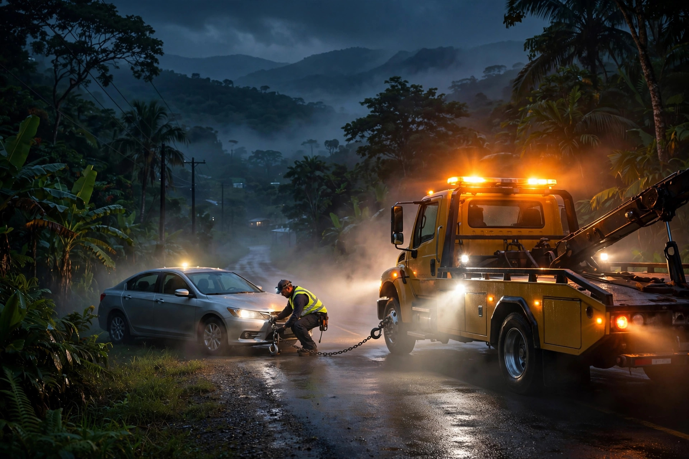
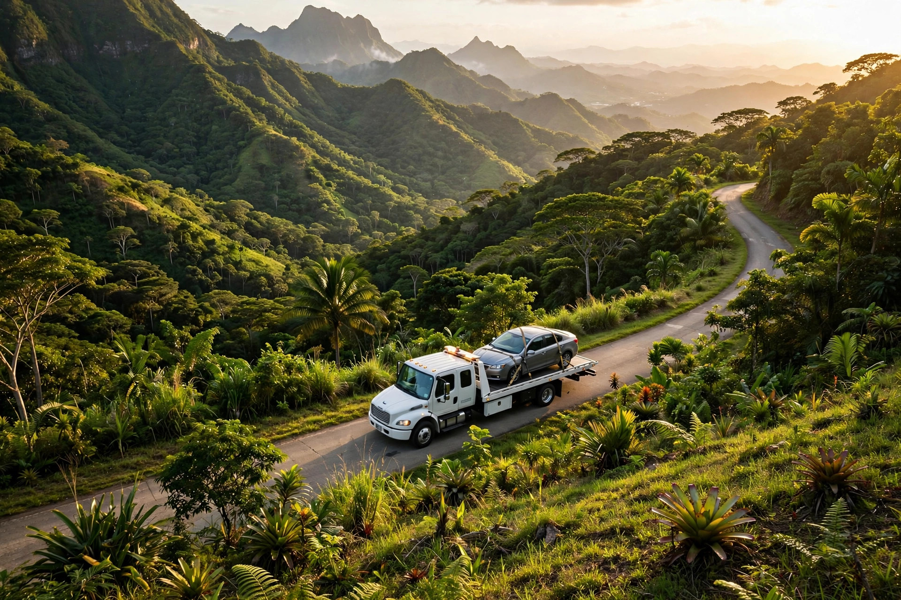

En el terreno


Servicios
Plataforma de precisión para carros, SUVs y pickups. Tu vehículo viaja seguro, sin arrastre.
Remolque local y a las áreas limítrofes: lo llevamos a tu casa, al taller o a donde necesites.
Goma, batería y rescate si te quedas varado en la rural o la carretera. Llámanos y coordinamos.
Fácil
Marca al 939-222-2229 o WhatsApp. Atendemos tu llamada directo.
Dinos dónde estás en Corozal o las áreas limítrofes y qué le pasa a tu vehículo.
Remolque o asistencia en el lugar, con trato de primera.
Zona de servicio
Base en Corozal con cobertura en las áreas limítrofes del centro de la isla. Llámanos con tu ubicación y te confirmamos el tiempo de llegada.
Dudas comunes
Corozal como base y las áreas limítrofes del centro de la isla: Toa Alta, Naranjito, Vega Alta, Orocovis y pueblos cercanos. Llámanos con tu ubicación y confirmamos.
Servicio de grúa, remolque, cambio de goma, paso de corriente y rescate si te quedas varado. Lo coordinamos por teléfono.
Sí. Usamos plataforma para que tu vehículo viaje seguro, sin arrastre.
Sí, cubrimos las áreas limítrofes del centro de la isla. Marca al 939-222-2229 y te confirmamos el tiempo de llegada.
Tu ubicación, el tipo de vehículo y qué pasó. Con eso salimos hacia ti.
Esta página la creó ManuPro. Escríbenos hoy mismo y cotiza la website profesional de tu negocio.
Cotizar por WhatsApp